Consulta de optometría
Examen visual completo con acompañamiento profesional y explicación clara.
Conoce el examen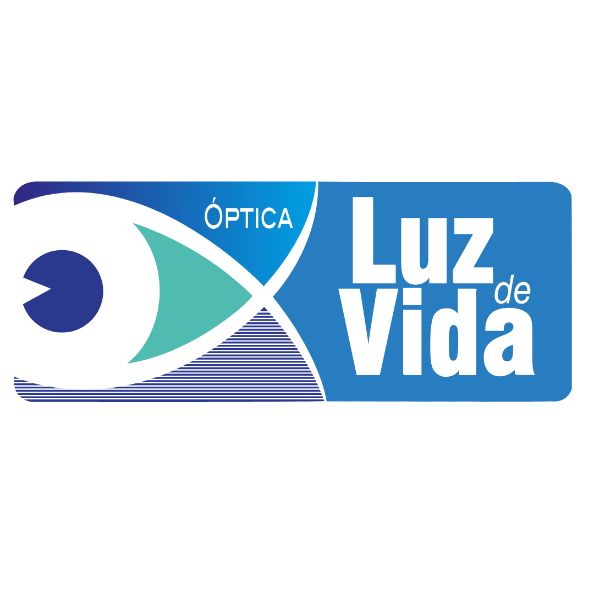
Agendar cita ↗Salud visual con raíces locales
Acompañamos la visión de las familias de Antioquia con exámenes, lentes y monturas; profesionales que escuchan y explican cada paso.
Contamos con las mejores marcas para ti
Lo que hacemos
Una atención completa, clara y humana para que tomes decisiones con confianza.
Examen visual completo con acompañamiento profesional y explicación clara.
Conoce el examenTratamientos y materiales elegidos para tu ritmo de vida.
Encontrar mis lentesFormas, colores y tallas para que tu estilo también vea bien.
Ver colecciónAdaptación profesional según tus necesidades y estilo de vida.
Hablar con un expertoEncuentra tu forma
Explora formas, colores y materiales pensados para acompañarte todos los días.
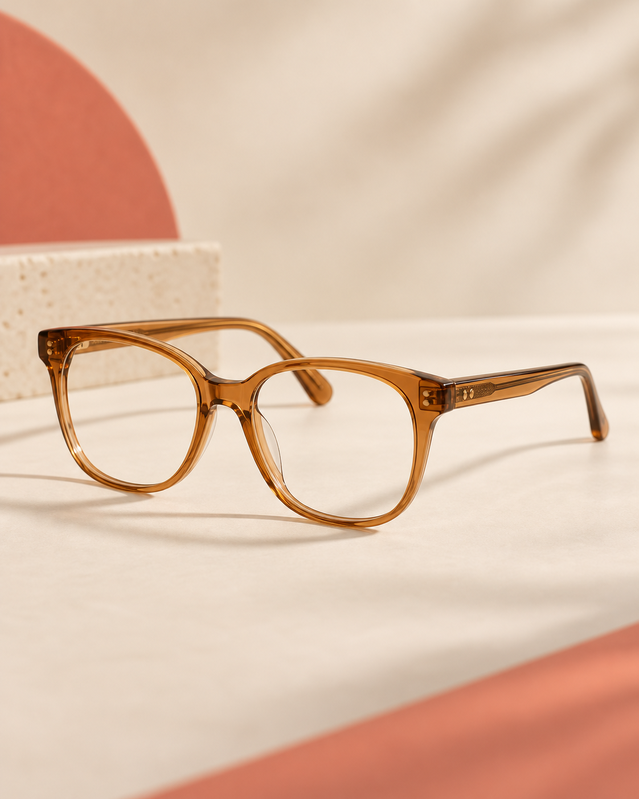
Acetato↻ Vista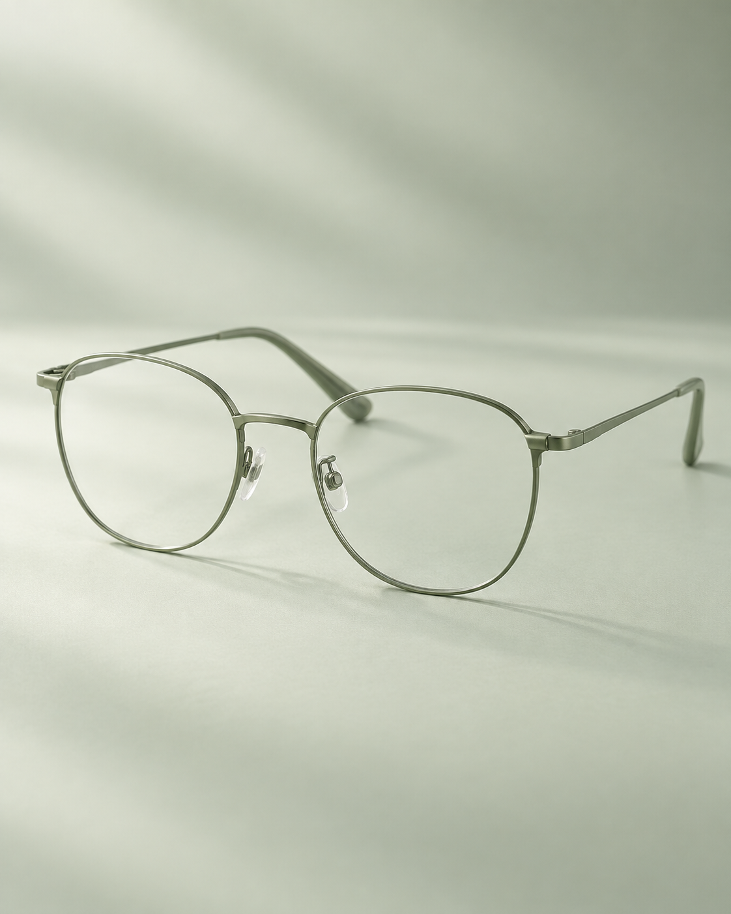
Metal↻ Vista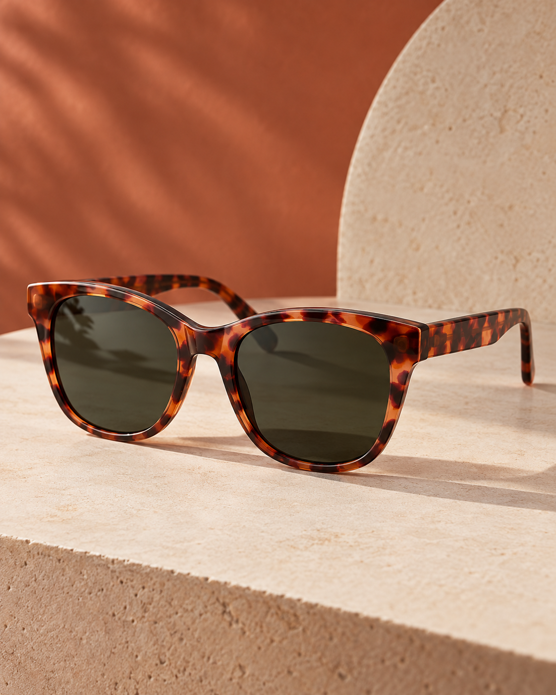
Sol↻ Vista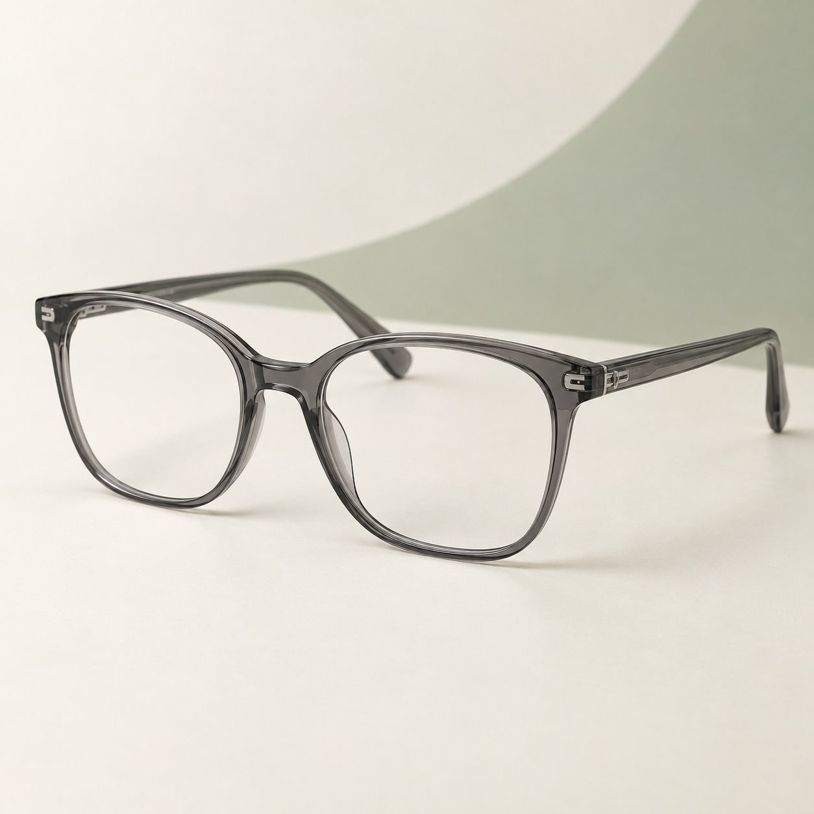
Acetato · Referencia↻ Vista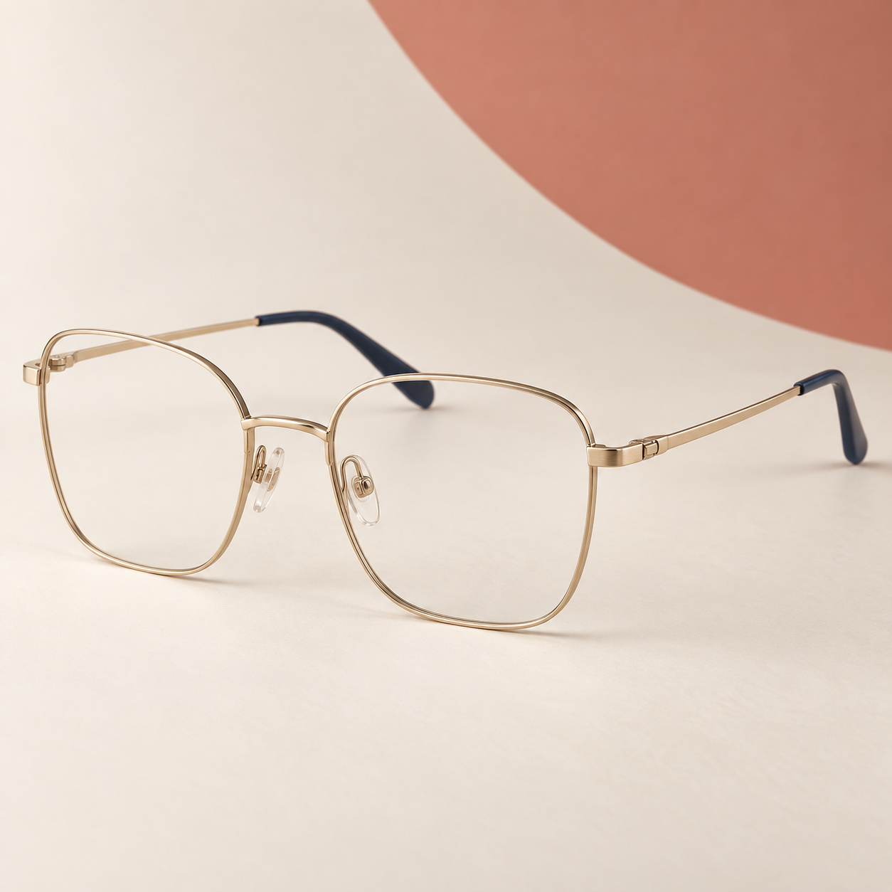
Metal · Referencia↻ Vista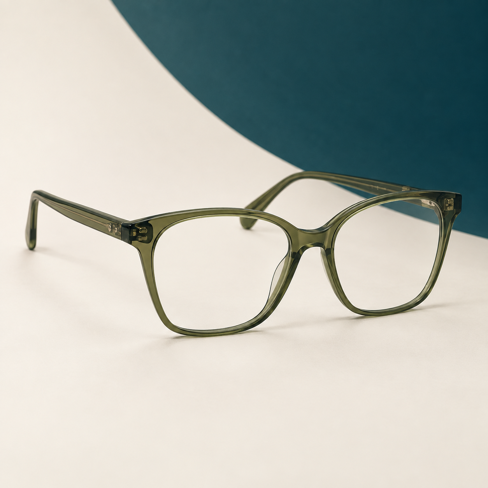
Acetato · Referencia↻ Vista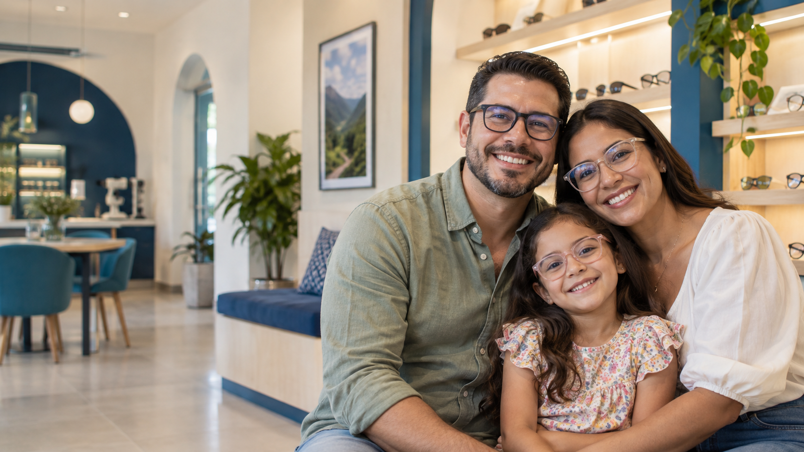
Más que una óptica
Óptica Luz de Vida nació para acercar la salud visual a las familias del Oriente antioqueño. Hoy, seguimos combinando precisión clínica con un trato cercano.
Equipo de optómetras que te orienta con claridad.
Pruebas visuales explicadas paso a paso.
Te explicamos cada resultado y opción antes de decidir.
Conócenos de cerca
Estas fotografías muestran la fachada y el interior de la sede de Marinilla. Son una referencia real de la experiencia en tienda.
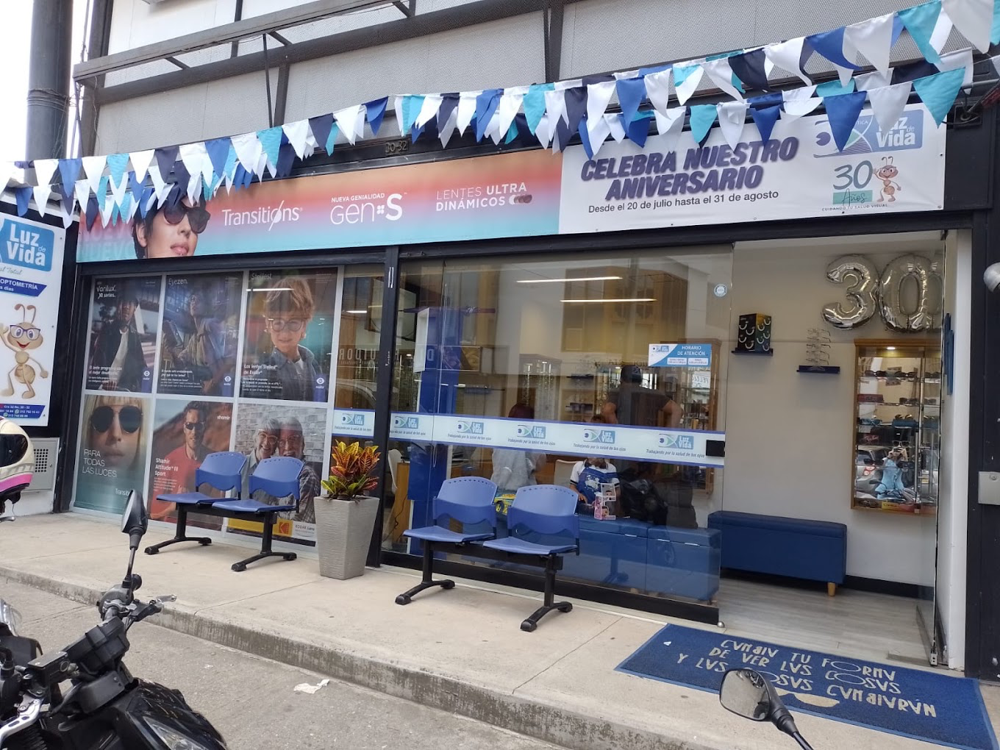
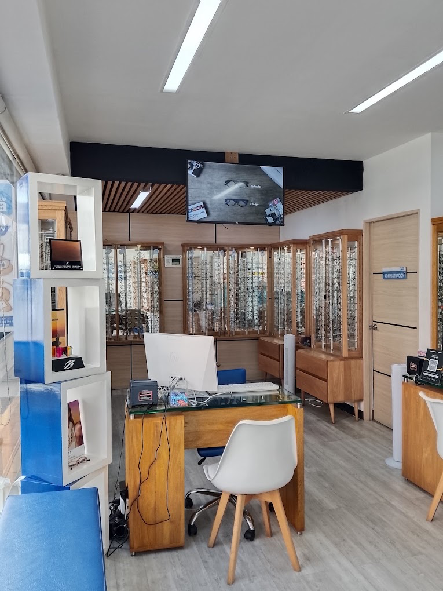
Nuestro equipo
Conoce a las optómetras que aparecen en la información pública de Óptica Luz de Vida.
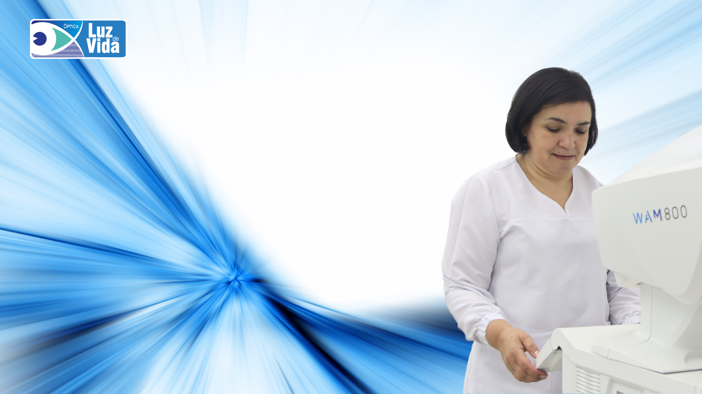
Optómetra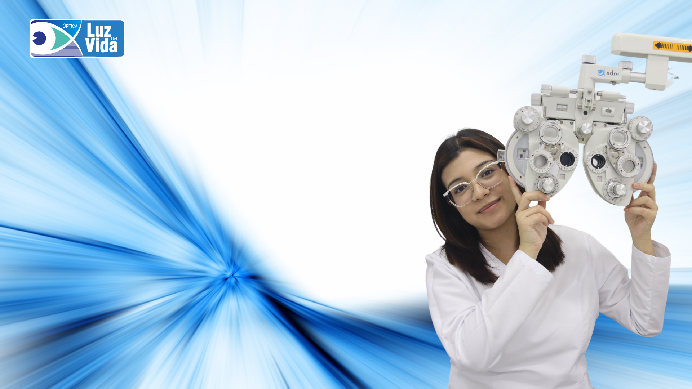
OptómetraEstamos cerca
Elige tu sede para ver horarios, llegar fácil o escribirnos directo.
Cra. 32 Nº 30 - 32
Lun–Vie · 7:30–19:00
Sáb · 9:00–16:00
Cra. 23 Nº 22a - 35
Vie · 13:00–17:30
Sáb · 9:00–13:00 / 14:00–18:00
Dom · 9:00–14:00
Lun · 9:00–13:30
Cra. 31 Nº 27 - 61
Jue–Mar · 7:30–12:00
14:00–18:30
Dom · 9:00–14:00
Tu siguiente paso
Déjanos tus datos y la sede que prefieres. Nuestro equipo te confirmará la disponibilidad y el horario por nuestros canales de atención.
Transparencia
Usamos los datos que dejas en esta solicitud —nombre, teléfono, sede y servicio— únicamente para responderte y coordinar la atención que pides.
Conocer, actualizar, rectificar o retirar tu autorización para el tratamiento de tus datos, de acuerdo con la normativa colombiana aplicable.
Óptica Luz de Vida · NIT 901.046.579-9. Para ejercer tus derechos, escríbenos por WhatsApp o a través de los canales oficiales de la sede elegida.